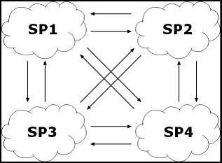

Section Summary: This section describes GigaSpaces IMDG Failover facilities.
Failover
Failover is the mechanism used to route user operations to alternate spaces in case the target space (of the original operation) fails. Several space members can belong to a failover group, which then defines their failover policy.
The component responsible for failover in GigaSpaces is the clustered proxy. This component maintains a list of spaces that belongs to the failover group. When an operation on a space fails, because the space member is unavailable, the clustered proxy tries to locate a live and accessible space member. If it finds such a space, it re-invokes the operation on that space member. If it doesn't find any live space member, it throws the original exception back to the user.
 A space cannot reside in different load-balancing and failover groups. In other words, the only way to apply both load-balancing and failover to a space is to define these policies for one group, which the space belongs to.
A space cannot reside in different load-balancing and failover groups. In other words, the only way to apply both load-balancing and failover to a space is to define these policies for one group, which the space belongs to.
Failover and Recovery Process
Failover and Recovery process includes the following steps (we assume spaces deployed using the SLA driven container (GSC and GSM):
1. Backup identifies that the primary space is not available and moving itself to a primary mode. The active election settings as part of the cluster config can be tuned to speed up this step.
2. Client request is routed to backup space. Request will be run on the backup space using a retry logic until the space becomes active/primary. Retry limits and gap between retries is configurable.
3. GSM identifies the backup space is missing and provision new space into existing GSC - preferably empty GSC or based on predefined SLA. You can tune this step by modifying the GSM settings.
4. Backup started. It is looking for the look service and register itself.
5. Backup identifies that a primary space exists (goes through primary election process) and moves itself into backup mode. If there are multiple GSMs and bad network or wrong locators configuration – you might end up here with split-brain scenario where you have multiple primaries running.
6. Backup read existing space objects from the primary space (aka memory recovery). This might take some time with few million space objects. In GigaSpaces 6.5 and onwards this is done via multiple threads. You can tune this by modifying the recovery batch size and also the amount of recovery threads.
7. Primary clears its redo log (During the above step) and starts to accumulate incoming destructive events (write , update , take) within its redo log. This is one of the reasons why the redo log size can have limited size in many cases. You can use the redo-log-capacity to configure the redo-log size. For example: If the recovery takes 30 sec and the client performs 1000 destruction operations/sec – your redo log size can be 30,000.
8. Backup completes reading space objects from primary.
9. Primary replicates redo log content to the backup (via the async replication channel) – In this point backup getting also sycn replication events from primary. You can control the redo log replication speed using the async replication batch size.
10. Once the redo replication completed – Recovery done. Backup is ready to act as a primary.
In order to speed up the recovery time you should use the following:
<os-core:space id="space" url="/./space"> <os-core:properties> <props> <prop key="cluster-config.groups.group.repl-policy.recovery-chunk-size">1000</prop> <prop key="cluster-config.groups.group.repl-policy.recovery-thread-pool-size">8</prop> </props> </os-core:properties> </os-core:space>
The above will change the recovery-chunk-size to 1000 objects (default is 200 object per chink) and the amount of threads the backup is running to consume data from the primary to 8 (default is 4).
Failover with Blocking Operations and Transactions
Even if a client invokes a blocking operation, like take with timeout and the server fails after receiving the take arguments but before returning a result, the client gets an exception, and the failover process aborts. This is because in a clustered engine, unlike a non-clustered one, the server thread servicing the request waits for a final answer to be given (unless the request is timed out).
If an operation is performed under a transaction and the target space that serviced the transaction has failed, the clustered proxy automatically aborts the transaction and throws a transaction exception back to the caller. (There is no point in re-invoking the operation to a different space, because the failed space member is a transaction participant. The transaction will ultimately be aborted by the transaction manager.) The caller catching the exception can start a new transaction and continue execution; later calls on the proxy are directed to an available space in the group.
Selective Failover Within the Group
Like a replication policy, a failover policy can also be selective, i.e. some spaces may not failover to all other spaces. For each space, and for each operation (of write, read, take and notify), you can define backup members to which space operations may fail. The backup members are always strictly included in the failover group.
Some of these backup members can be designated as backup only. This means that the space is not made available to clients, but rests in wait for the master space to fail. This provides a stronger guarantee of availability.
Failover to Alternate Groups
A failover group can name alternate groups as backups. This means that if the failover process commences and no live space is found from the original failover group, the clustered proxy searches for live spaces in the alternate groups.
If there is more than one alternate group, the proxy searches them according to a specific order defined in the failover policy. This allows you to set priorities between failover groups in the cluster.
The following figure depicts a cluster of four spaces, two of them reside in the "East" site, and two on the "West" site:

A failover group groups the space members in the "East" and another failover group groups the space members in the "West". If an operation is made on an "Eastern" space that is down, the clustered proxy in the "East" tries to failover to another space member in the "East". If all spaces in the "East" are inaccessible, the proxy tries to find a live space member in the "West" group, and upon finding one, fails the operation to that space. The same occurs in vice verse: If the "Western" clustered proxy cannot fail to a space in the "West," it searches for an available space in the "East."
Backup and Backup-Only
For each space in a failover group, you can define one or more "backup members." These are other spaces, in the same failover group, to which operations will be routed if the space fails. To activate this option, you must set the space's failover policy to Fail to Backup.
It is also possible to create dedicated backup spaces. If you define a backup space as Backup Only, it will not be directly accessible to users, and will stand ready to receive failed operations from other spaces in the failover group.
Failover with replication
While you do not have to define replication with failover, this is often necessary. The failover mechanism routes operations transparently to an available space. However, it does not ensure that the space objects, which the user wanted to operate on, exists in that other space. If the user's operation is read or take, for example, it will not have the desired effect unless all the space objects from the master (target) space are precisely replicated in the slave space.
This can be achieved by defining both a replication policy and a failover policy for a certain group. This will ensure that as long as the master slave is live, its updates are replicated to the slave space, which is then ready to assume the role of failover slave.
Inactive Space retries
When a primary space partition fails and a backup space partition is being elected as a primary, client proxy will recognize the primary failure and route the requests to the backup. Election of a backup to primary is done using active election process and this is not instantaneous (might take few seconds based on the active election configuration parameters). Any client requests directed to this partition during this time will still complete because there is a retry logic for recognizing com.gigaspaces.cluster.activeelection.InactiveSpaceException conditions, where proxy retries the same operation until the space becomes active/primary. Retry limits and gap between retries can be configured using following system properties on the client side:
| Property (client side) | Description | Defualt value |
|---|---|---|
| com.gs.client.inactiveRetryLimit | Number of retires on operation, waiting for one of the servers to become active after Active election. |
20 |
| com.gs.failover.standby-wait-time | Retry backoff sleep time(ms). Between retries while waiting for one of the servers to become active after Active election. |
1000 ms |